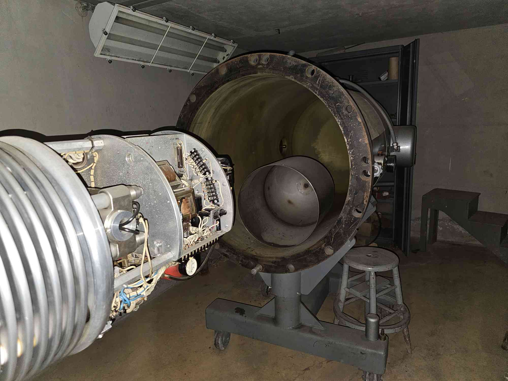
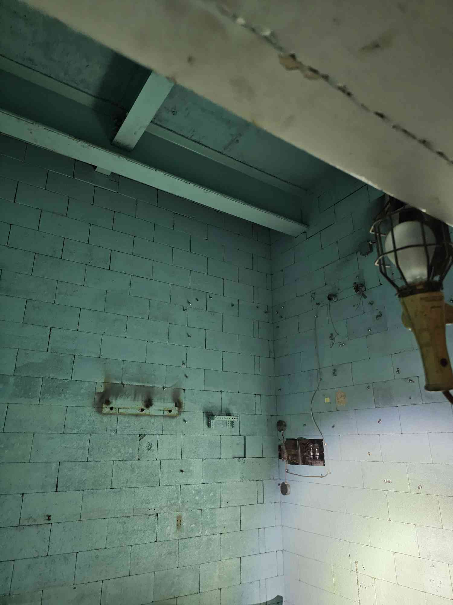

The Secret Nuclear Facility Hidden in Plain Sight
BACK
Background
In April 2026, I became infatuated with a building I had always seen, but never paid mind to. Off to the side of North lot is this pair of structures covered with a sheet metal facade, that I now know as Blaw-Knox, named after the steel company that once owned the structure. According to RPI website, I learned that hisotrically this housed an
entire nuclear facility inside BK2 (the wing closest to the camera (BK1 further from camera)) way back when, and I knew I had to see it. So I took the responsible route of course and through a series of cold emails got a tour with my good buddy and fellow nuke Robert to see what exactly went on in Blaw-Knox.
Historic BK to what it is now. A facade has been placed over it..
The Facility
Rad-Waste Room:
If there was an iceberg chart, this would be like second layer. This room is primarily accessed by the RPI Rad Safety officer who goes in here to process any waste. Cool part alert: this room used to house a pool with Co-60 for research purposes. You can see on the floor a rectangule where the pool was sealed up.
Now, we do not know if the pool was sealed as opposed to filled with concrete, so there might be a sealed cavity underneath this room.
A fun tidbit from Tom Haley: HE used to have class in here as a Nuke at RPI! He said they would stand around this Co-60 pool and the professor would pull stuff out -- and one time bring it right next to his face. He liked that class. Now in the back you see a door -- this leads to the
incinerator where they would vaporize rad waste before there were many regulations they say. Keep in mind this ominous door for later.
Sub-critical Reactor Room:
During the days of the RCF (RPI's test reactor in Schen**tady), we had this as well. A fully functional test reactor, kept subcritical. This means it is not a self-sustaining reaction,
but rather kept at a point where it can generate neutrons that we can use for testing purposes. It may not look like much now, but the shape is indistinsuishable from its active days, according
to Tom Haley once again (to whom we showed these photos).
I just can't fathom getting to go to class and this is your lab, staring down this ornate octagonal object. The pipe inside should not be there, as this was instead full of water and fuel rods. Who knows where those are now. In the bottom left you can
see a crate, and this was labelled BNL, for Brookhaven National Lab. It was empty. What was supposed to go in there?
Van-de-Graff Accelerator:
Now behind the reactor exists a narrow staircase, and descending in this dark and cobwebby catacomb creates quite a creepy climate. And thus you enter the Van-de-Graff. It must have
been the smallest room to contain this machine, surrounded by who knows how thick concrete. This was a betatron,
or electron accelerator that could be used up to 30 MeV or so for who knows what they were up to back then. It was a bout 10 feet long maybe, and at the end of the line were some signs displaying some educational information meant for incoming tours. I asked to take one but no avail. HOWEVER,
I did get to take this old notepad that was resting on the Van-de-Graff itself with some old writing on it from WHO KNOWS. This is now known as the BKP, and I take NEEP lab data on it.


This other haunting photo is the control room for the accelerator, located back on the main floor behind even more walls of shielding. Sadly all the monitors and machinery were stripped long, long ago. All that remains is a lovely bright-painted room.
The Classroom:
And so we descend deeper into Blaw-Knox, or shall I say ascend for this part. This classroom is located up the stairs, and constitutes that top floor you see in the photos of BK2. Interestingly, this was not used as much for nuclear education, but rather an electronic
instrumentation lab. Old instruments unrecognizable to my untrained eyes were strewn about, not touched in possibly 30 years.
This was my favorite scene in the room: a chalkboard still dated to 1993. Untouched for 33 years. I wonder if there was a class who knew they would be the last in Blaw-Knox and left something like that there. Or perhaps they
had no idea. There were other things dated past 1993, likely from meddling kids breaking in and checking out the buildings themselves (without a proper tour like us). Interestingly, this was my favorite room. Yes, the nuclear stuff is awesome,
but imagining having class in this building was something else. Seeing relics from -- granted not too long ago -- classes of people who are now our parents was truly fascinating.
The Surgical Room:
You knew we had to end up here. While BK2 was a nuclear facility, its twin BK1 was a complete animal testing lab. As we walked from BK2 to BK1, it was a short unassuming hallway with paintings lining the walls, yet the vibe felt a little different. Not negative,
just a subtle shift in vibe. Indeed, our guide explained that in the 80s, the researchers in BK1 were heavy into working with chimpanzees and other animals. And armed with this knowledge, we see the various rooms for simply haunting purposes such as a stark, utilitarian room where they would keep the cages.
But you saw the title of this panel.
The pictured room now houses tech waste from many decades, but its original purpose is evident by the tables, harsh lights, overhead cabinets and just vibe. People working in these buildings would say it got loud in this particular room. Now if you notice on the back wall is similar ominous door with a sign warning visitors to not enter. I am sorry to report this is
leading to the same room that the previous ominous door does in the second panel.
When questioned to Tom Haley about this, he explained it a little more, since his not-yet-wife actually worked in here back in the day as a student. She worked with dogs, who would be sedated, tested, and treated. Yet the research performed here helped save countless other dogs learning about
medicines and remedies for various conditions. That at least makes me feel better a little, but it still doesn't erase the nature of the room and its unsettling history.
Thanks!
And on that lovely note, I'd like to thank you for coming on my little tour of BK. It was a Blast-Knowing how cool and it was in something as plain sight as this. I'll admit while much of my exploration is...on my own accord... it was genuinely nice having the Rad waste officer show us around with all her knowledge on the facility, so shoutout Ginger!